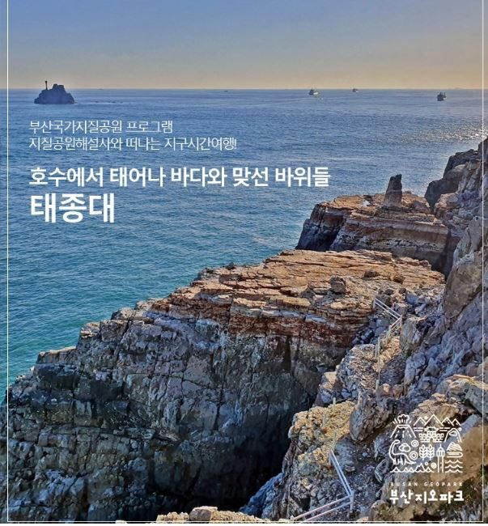
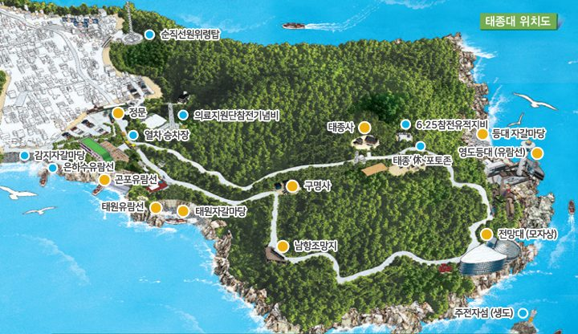

태종대 지오 사건파일
바다와 육지의 경계선은 누가 긋는가? 그 선은 무엇을 나누고 무엇을 잇는가?

조별로 이 수첩 하나를 함께 씁니다. 입력하는 순간 이 폰에 자동 저장돼서, 화면을 끄거나 다른 앱·페이지에 다녀와도 같은 휴대폰·같은 브라우저로 다시 열면 그대로 이어져요. 단, 시크릿(비공개) 탭에서는 저장되지 않아요.
⚠ 이 브라우저는 기록을 저장할 수 없어요(시크릿 모드일 수 있어요). 일반 탭에서 다시 열어 주세요.
이 수사가 특별한 이유
지형을 외우는 대신, 현장에서 증거로 읽는다. 해식애, 파식대, 자갈 해빈은 교과서의 용어가 아니라 태종대에 실제로 남아 있는 흔적이다.
경계는 고정된 선이 아니다. 바다와 육지의 경계는 파도와 태풍에 따라 매일 움직이고, 사람은 그 위에 등대·통제선·방파제 같은 새 선을 긋는다.
답은 현장에만 있다. 검색으로는 풀 수 없다. 직접 보고 세고 들어봐야 다음 단서가 열린다.
핵심 키워드
수사 룰
- 조로 움직인다. 팀장·기록·사진·길잡이를 나눠 맡고 흩어지지 않는다.
- 핀을 찾아 문제를 푼다. 정답을 맞히면 용의자의 단서 카드가 열린다. 순서는 자유다.
- 정답 유형을 보고 입력한다. [한글 2자], [숫자 4자리]처럼 답의 형태가 적혀 있다.
- 막히면 힌트를 쓴다. 힌트 −1점, 정답 보기 −3점.
- 2시간 5분에는 무조건 멈춘다. 어디에 있든 감지해변으로 이동한다.
- 범인 투표는 한 번뿐이다. 문제를 다 풀어도 범인을 틀릴 수 있다.
- 안전이 점수보다 먼저다. 통제선·공사 구역에 들어가거나 돌을 가져가면 그 조의 수사는 중단된다.
점수와 등급
| 항목 | 점수 |
|---|---|
| 핀 문제 1개 해결 | +2 |
| 노트와 현장이 다른 곳 기록 (3곳) | +2 |
| 범인 지목 성공 | +10 |
| 동기 맞히기 | +5 |
| 결정적 증거 1개당 | +3 |
| 힌트 보기 / 정답 보기 | −1 / −3 |
만점 54점 · 50점 이상 최고의 명탐정 · 38점 이상 유능한 탐정 · 25점 이상 평범한 탐정 · 그 아래 견습 탐정. 집결 지각은 선생님이 따로 감점합니다.
수사관 안전수칙
- 통제선과 공사 구역 안으로 절대 들어가지 않는다. 그 안쪽은 내려다보며 수사한다.
- 젖은 바위, 이끼 낀 바위, 호안 계단의 젖은 부분은 밟지 않는다.
- 파도가 닿는 선에서 3m 이상 떨어진다.
- 돌은 관찰한 뒤 제자리에 둔다. 국가지질공원의 돌은 증거이자 유산이다.
- 순환도로에서는 가장자리로 걷고, 셔틀버스가 오면 멈춰 선다.
사라진 보고서
감지해변은 모래 대신 둥근 자갈이 깔린 해변이다. 태풍이 올 때마다 크게 부서졌고, 그때마다 파도가 자갈을 다시 쌓아 해변을 되살렸다. 2023년부터는 바다 속에 파도를 막는 이안제가, 해변 뒤에는 계단식 호안이 들어섰다.
태종대 지질공원 해설사 한바다 씨는 여러 해 동안 감지해변의 변화를 기록해 「감지해변 정비 전후 관찰 보고서」를 완성했다. 보고서는 내일 열리는 「감지해변 2단계 해안 데크 공청회」에서 발표될 예정이었다.
그런데 오전 10시에서 11시 사이, 태종사 앞 쉼터에 둔 가방에서 보고서가 사라졌다. 찢긴 조각들이 태종대 곳곳에서 발견되고 있다. 그 시간 태종대에 있었던 네 사람은 모두 "나는 다른 곳에 있었다"고 말한다.
오프닝
세 가지 임무
- 움직인 선을 찾아라. 한바다의 노트와 현장을 비교해 달라진 곳을 기록한다.
- 거짓말을 찾아라. 용의자 진술 속 장소 묘사를 현장에서 확인한다.
- 범인과 동기를 밝혀라. 감지해변에서 범인, 동기, 결정적 증거 3가지를 제출한다.
등장인물
인물과 「2단계 해안 데크 공사」는 가상이다. 감지해변의 이안제와 호안은 실제 시설이다.
한바다 사건 의뢰인 · 지질공원 해설사 10년 차
"제 보고서의 결론은 한 줄이에요. '해변의 선은 파도가 긋는다. 새 선을 긋기 전에 더 오래 지켜봐야 한다.' 그런데 이 결론을 싫어하는 사람이 꽤 있었죠."
용의자
진술 속에서 현장에서 확인할 수 있는 문장을 찾아두고, 거점에서 사실인지 확인해 메모하자.
돌 하나의 여행
태종대 절벽(곶)에서 떨어져 나온 돌이 파도에 굴러 자갈마당과 감지해변(만)에 도착한다. 거점마다 다른 종류의 선이 있다.

입구 F E A B C D태종대 위치도 · 출처: 부산국가지질공원. 빨간 핀은 수사 거점, 금색 F는 마지막 집결지 감지해변(감지자갈마당).
순환로는 입구 → E 태원자갈마당 → A 전망대 → B 영도등대 → C 신선바위 → D 태종사 → 입구로 한 바퀴 이어진다. 홀수 조는 이 순서대로(E→A→B→C→D), 짝수 조는 반대로(D→C→B→A→E) 돈다. 모든 조는 입구로 돌아와 F 감지해변에 모인다.
3시간 시간표
| 시간 | 활동 | 장소 |
|---|---|---|
| 0:00 | 집결, 인원 확인, 수첩 접속 | 태종대 입구 광장 |
| 0:15 | 순환로 자유 수사 (A~E) | 태종대 순환로 |
| 2:05 | ⏰ 수사 멈추고 감지해변으로 이동 | 도보 |
| 2:20 | F 미션, 최종 검증, 범인 투표 | 감지해변 |
| 2:40 | 진상 공개, 보고서 복원 | 감지해변 |
현장 미션
단서를 얻기 위한 장소에 도착하셨나요? 📷 표시는 현장 사진과 같은 곳을 찾아 푸는 문제, 🧩는 키트 속 문제지를 쓰는 문제다.
최종 수사 보고
감지해변에서 제출한다. 한 번 제출하면 바꿀 수 없다.
감지해변 정비 전후 관찰 보고서
감지해변의 다음 선을 그을 것인가
범인은 잡혔지만 질문은 남아 있다. 「2단계 해안 데크」는 만들어야 할까? 보고서를 빼돌린 건 잘못이지만, "사람들이 바다를 가까이 보게 하자"는 주장까지 틀린 것은 아니다.
우리 조가 그은 선
현장에서 사진 위에 그은 선들이다. 안내판이나 비평문의 증거로 쓰자.
역할
| 역할 | 입장 | 지키려는 것 |
|---|---|---|
| 해안 카페 개발업자 | 데크를 빨리 만들자 | 일자리, 관광, 바다에 가까이 갈 권리 |
| 영도 해녀 | 더 막아달라 | 태풍으로부터의 안전, 물질하는 바다 |
| 지질공원 해설사 | 더 지켜본 뒤 정하자 | 파도가 만드는 자갈 해변, 지질유산 |
| 여행 유튜버 | 사람이 더 찾게, 방식은 고민 | 탐방객의 경험, 홍보 |
| 지리학 연구자 | 자료로 판단하자 | 정비 전후 비교 자료, 장기 관측 |
| 구청 담당자 (가상) | 의견을 듣고 결정 | 예산, 안전, 주민 의견 |
선 긋기 제안
- 새 선을 긋는다. 데크의 위치와 길이를 그리고, 자갈 둔덕을 피하는 방법을 설명한다.
- 선을 긋지 않는다. 대신 무엇을 할지(관측, 안내판, 탐방 프로그램) 제안한다.
- 움직이는 선을 긋는다. 물때·파도 높이·태풍 특보에 따라 열고 닫는 조건을 정한다.
최종 산출물
- 중학생 감지해변 지오트레일 안내판 1장: 세 개의 선 그림 + 설명 3문장 + 탐방객에게 하는 부탁 1문장
- 고등학생 경계 비평문 300자: "감지해변의 선은 무엇을 나누고 무엇을 잇는가" (현장 증거 2개 이상, 반대 입장 1개 언급)
우리 조의 제안 메모
최종 보고와 보고서 복원을 제출하면 결과가 자동으로 전송돼요. 공청회 메모까지 쓴 뒤 한 번 더 보내 주세요.
새 조가 이 폰으로 처음부터 시작해야 하면
사건 해결!
사라진 보고서를 완벽하게 복원했다.
몽돌이: "공청회장이 조용해졌어요!"
이 화면을 선생님께 보여주세요.
수사 방명록
오늘 수사에서 기억에 남는 장면을 사진 한 장과 한 줄로 남겨요. 궁금한 게 생겼다면 질문으로 남겨도 좋아요. 모든 조의 글이 앨범과 지도에 함께 모여요.
방명록 지도
위치를 넣은 글이 지도에 핀으로 꽂혀요. 파랑은 방명록, 주황은 질문.
앨범
불러오는 중…